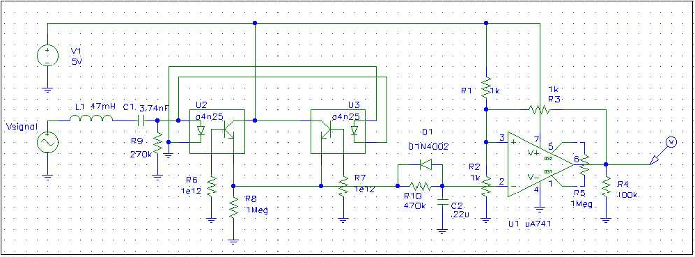

| HOME | PERSONAL | PROJECTS | LINKS |
Esaminando lo schema elettrico da sinistra verso destra abbiamo il
primo stadio di accoppiamento .
La linea telefonica ,rappresentata dal generatore Vsignal che simula il
segnale a 12kHz (ampiezza 2V rms), è isolata dagli altri stadi
del circuito alimentati da un qualsiasi generatore da 5 - 12
V e potenza adeguata per pilotare qualsiasi utilizzatore del segnale
generato.
La scelta di un filtro LC serie ( del I ordine ) si è rivelata
sufficiente ad attenuare tutti gli altri segnali presenti sulla linea:
la banda audio (300-4kHz, 2 V rms) e lo squillo ( 25Hz, 120 V).
Un segnale di disturbo inaspettato é generato quando si alza la
cornetta di un telefono che utilizza interruttori meccanici. Quando si
alza il telefono la tensione della linea cala da 50 V a 12V circa in un
tempo brevissimo, questo gradino genera un segnale che può essere
erroneamente conteggiato dal rilevatore. Non é da escludere
inoltre che la cornetta venga alzata mentre sulla linea é
presente il picco del segnale dello squillo; il gradino sarebbe in
questo caso di oltre 100 V ( o molto più a causa di carichi
reattivi da attribuire principalmente alle suonerie ).
Il segnale filtrato raggiunge i led contenuti nei due fotoaccoppiatori
siglati U2 e U3 e viene trasferito, amplificato e raddrizzato dai due
transistor.
Il segnale spurio provocato dai contatti meccanici é l' unico
disturbo che potrebbe presentarsi sugli emettitori dei transistor; ma
é di durata molto breve ( rispetto a quella del segnale a 12kHz
di .1 sec circa ) e viene allora filtrato dal D1, R10 e C2, che
provvedono inoltre a livellare il segnale buono. L' operazionale siglato
U1 é un comparatore co isteresi che commuta dallo stato alto a
quello basso quando il segnale al suo ingresso invertente supera 2/3
Vcc e torna allo stato di riposo quando scende sotto 1/3 Vcc.

R9 può essere aumentata ma il filtro diventa meno selettivo.
Per R1, R2, R3 si può scegliere il valore di 10k-100k Ohom, o
può essere aumentato per limitare la potenza dissipata;Nei
fotoaccoppiatori le basi dei transistror sono flottanti.
R10 e C2 sono dimensionati in modo tale che passi un segnale di durata
non inferiore a t = R C ln ( k ) , con la soglia del comparatore fissata
a k * Vcc.
| HOME | PERSONAL | PROJECTS | LINKS |